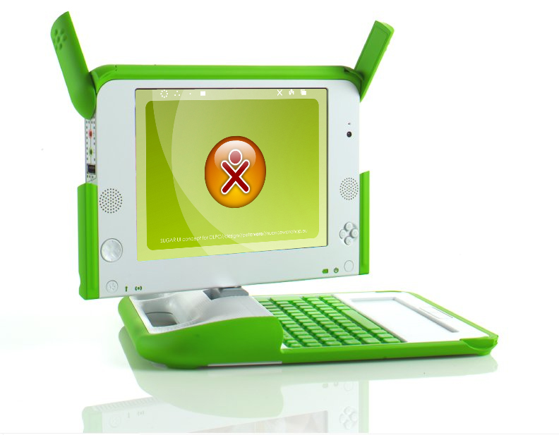
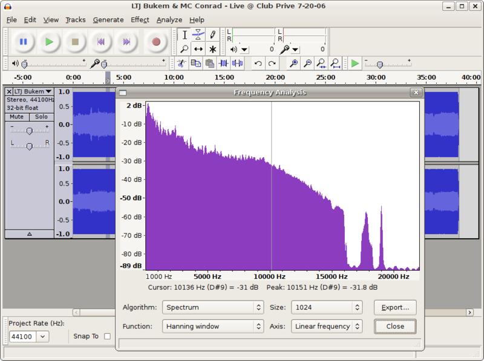
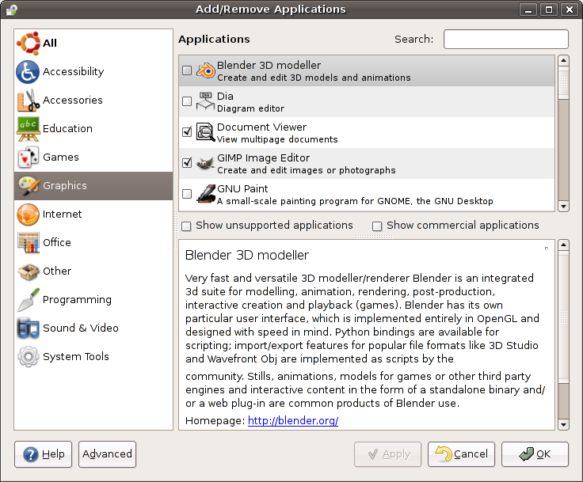

The One Laptop Per Child has as much CPU power as a workstation of 1991, but it would be just a shiny box without free software and content.
The biggest difference between Windows and Linux is that free software contains thousands of applications, installable with one click, and managed as one set. A Linux operating system includes all the obvious stuff like a spreadsheet, web browser, and instant messaging, but it also includes tools for making pictures and music, children's applications, server software, the Bible, development tools, and much more.
Audacity is the most popular free audio editor on Linux. It doesn't have a talking paper clip: “It looks like you're trying to add echo. Would you like some help?” But it does provide a well-rounded set of features, and has many effects for the manipulation of sound.

A rich and reliable free audio manipulation tool
Audacity, of course, doesn't have a one-minute limitation on its ability to record as Windows XP does. Its most important feature is its plugins for import, export, and effects — extensibility is one of free software's best features.
| Audacity Audio Editor Feature List | |
|---|---|
RecordingAudacity can record live audio through a microphone or mixer, or digitize recordings from cassette tapes, vinyl records, or minidiscs. With some sound cards, it can also capture streaming audio. Record from microphone, line input, or other sources. Dub over existing tracks to create multi-track recordings. Record up to 16 channels at once (requires multi-channel hardware). Level meters can monitor volume levels before, during, and after recording. Import and ExportImport sound files, edit them, and combine them with other files or new recordings. Export your recordings in several common file formats. Import and export WAV, AIFF, AU, and Ogg Vorbis files. Import MPEG audio (including MP2 and MP3 files) with libmad . Export MP3s with the optional LAME encoder library. Create WAV or AIFF files suitable for burning to CD. Open raw (headerless) audio files using the “Import Raw” command. Note: Audacity does not currently support WMA, AAC, or most other proprietary or restricted file formats. EditingEasy editing with Cut, Copy, Paste, and Delete. Use unlimited Undo (and Redo) to go back any number of steps. Very fast editing of large files. Edit and mix an unlimited number of tracks. Use the Drawing tool to alter individual sample points. Fade the volume up or down smoothly with the Envelope tool. | EffectsChange the pitch without altering the tempo, or vice-versa. Remove static, hiss, hum, or other constant background noises. Alter frequencies with Equalization, FFT Filter, and Bass Boost effects. Adjust volumes with Compressor, Amplify, and Normalize effects. Other built-in effects include: Echo Phaser Wahwah Reverse Sound QualityRecord and edit 16-bit, 24-bit, and 32-bit (floating point) samples. Record at up to 96 KHz. Sample rates and formats are converted using high-quality resampling and dithering. Mix tracks with different sample rates or formats, and Audacity will convert them automatically in real time. Plug-InsAdd new effects with LADSPA plugins . Audacity includes some sample plugins by Steve Harris . Load VST plugins for Windows and Mac, with the optional VST Enabler . Write new effects with the built-in Nyquist programming language. AnalysisSpectrogram mode for visualizing frequencies. “Plot Spectrum” command for detailed frequency analysis. Free and Cross-PlatformLicensed under the GNU General Public License (GPL) . Runs on Mac OS X, Windows, and GNU/Linux. |
Developers of free software applications tend to build extensibility plugins as a fundamental way of writing their software because they know their tool will never by itself be able to do all the things people will want. A plugin provides a boundary between things that manage data, and things that manipulate it. The most popular plugins eventually become a part of the base system, but by being built separately, they have forced clean boundaries and modularity.9
Every application that Linux has that Windows doesn't is a feature Windows is missing:

Richard Stallman's free software vision realized: A free Linux operating system contains an entire store of free applications available with one click, and built to work together. Having so many tools at your disposal makes computers more personal, powerful, productive, and enjoyable. Your computing experience becomes limited only by your creativity.
A free operating system is where Metcalfe's law meets software: the more people using free software, the more applications will be built for it. Just one piece of free software isn't useful, but with an entire stack, we can enter a shining age.
Going from today's 20 million Linux users to the anticipated one billion means the potential for 50 times more resources. The free software stack has several challenges I will discuss throughout this book, but it is important to mention here that few of the applications in the dialog box are as polished or reliable as Firefox. However, many are very powerful, and more than good enough to depend on in a business.
While Linux still needs work, Windows is no day at the beach. Here is an email from Bill Gates' describing his experience of installing Microsoft MovieMaker on Windows:
From: Bill Gates Sent: Wednesday, January 15, 2003 10:05 AM To: Jim Allchin Cc: Chris Jones (WINDOWS); Bharat Shah (NT); Joe Peterson; Will Poole; Brian Valentine; Anoop Gupta (RESEARCH) Subject: Windows Usability degradation flame I am quite disappointed at how Windows Usability has been going backwards and the program management groups don't drive usability issues. Let me give you my experience from yesterday. I decided to download (Moviemaker) and buy the Digital Plus pack ... so I went to Microsoft.com. They have a download place so I went there. The first 5 times I used the site it timed out while trying to bring up the download page. Then after an 8 second delay I got it to come up. This site is so slow it is unusable. It wasn't in the top 5 so I expanded the other 45. These 45 names are totally confusing. These names make stuff like: C:\Documents and Settings\billg\My Documents\My Pictures seem clear. They are not filtered by the system ... and so many of the things are strange. I tried scoping to Media stuff. Still no moviemaker. I typed in movie. Nothing. I typed in movie maker. Nothing. So I gave up and sent mail to Amir saying - where is this Moviemaker download? Does it exist? So they told me that using the download page to download something was not something they anticipated. They told me to go to the main page search button and type movie maker (not moviemaker!) I tried that. The site was pathetically slow but after 6 seconds of waiting up it came. I thought for sure now I would see a button to just go do the download. In fact it is more like a puzzle that you get to solve. It told me to go to Windows Update and do a bunch of incantations. This struck me as completely odd. Why should I have to go somewhere else and do a scan to download moviemaker? So I went to Windows update. Windows Update decides I need to download a bunch of controls. (Not) just once but multiple times where I get to see weird dialog boxes. Doesn't Windows update know some key to talk to Windows? Then I did the scan. This took quite some time and I was told it was critical for me to download 17megs of stuff. This is after I was told we were doing delta patches to things but instead just to get 6 things that are labeled in the SCARIEST possible way I had to download 17meg. So I did the download. That part was fast. Then it wanted to do an install. This took 6 minutes and the machine was so slow I couldn't use it for anything else during this time. What the heck is going on during those 6 minutes? That is crazy. This is after the download was finished. Then it told me to reboot my machine. Why should I do that? I reboot every night — why should I reboot at that time? So I did the reboot because it INSISTED on it. Of course that meant completely getting rid of all my Outlook state. So I got back up and running and went to Windows Update again. I forgot why I was in Windows Update at all since all I wanted was to get Moviemaker. So I went back to Microsoft.com and looked at the instructions. I have to click on a folder called WindowsXP. Why should I do that? Windows Update knows I am on Windows XP. What does it mean to have to click on that folder? So I get a bunch of confusing stuff but sure enough one of them is Moviemaker. So I do the download. The download is fast but the Install takes many minutes. Amazing how slow this thing is. At some point I get told I need to go get Windows Media Series 9 to download. So I decide I will go do that. This time I get dialogs saying things like "Open" or "Save". No guidance in the instructions which to do. I have no clue which to do. The download is fast and the install takes 7 minutes for this thing. So now I think I am going to have Moviemaker. I go to my add/remove programs place to make sure it is there. It is not there. What is there? The following garbage is there. Microsoft Autoupdate Exclusive test package, Microsoft Autoupdate Reboot test package, Microsoft Autoupdate testpackage1. Microsoft AUtoupdate testpackage2, Microsoft Autoupdate Test package3. Someone decided to trash the one part of Windows that was usable? The file system is no longer usable. The registry is not usable. This program listing was one sane place but now it is all crapped up. But that is just the start of the crap. Later I have listed things like Windows XP Hotfix see Q329048 for more information. What is Q329048? Why are these series of patches listed here? Some of the patches just things like Q810655 instead of saying see Q329048 for more information. What an absolute mess. Moviemaker is just not there at all. So I give up on Moviemaker and decide to download the Digital Plus Package. I get told I need to go enter a bunch of information about myself. I enter it all in and because it decides I have mistyped something I have to try again. Of course it has cleared out most of what I typed. I try (typing) the right stuff in 5 times and it just keeps clearing things out for me to type them in again. So after more than an hour of craziness and making my programs list garbage and being scared and seeing that Microsoft.com is a terrible website I haven't run Moviemaker and I haven't got the plus package. The lack of attention to usability represented by these experiences blows my mind. I thought we had reached a low with Windows Network places or the messages I get when I try to use 802.11. (don't you just love that root certificate message?) When I really get to use the stuff I am sure I will have more feedback.